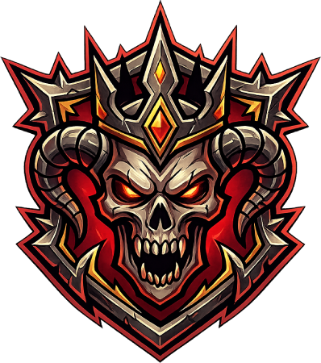

EVADE/DASH while airborne for to perform a mid-air dash to avoid damage and close in on enemies.
Hold LAUNCH in the air to crash enemy straight down, stunning them.
After launching an enemy into the air, JUMP to follow them up and extend the combo.
Perfectly timing a DEFLECT against a projectile sends it back at the enemy.
Hold DEFLECT while airborne instantly snap to the floor — great for escaping pressure.

THE VEILBREAKER